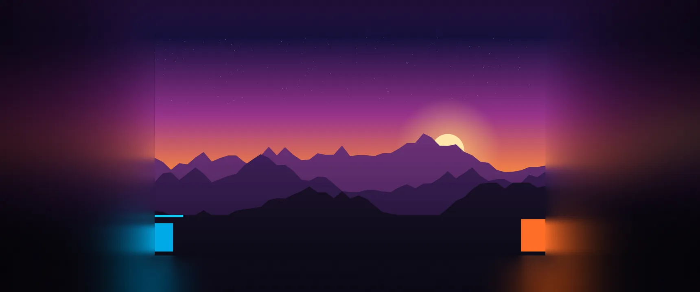
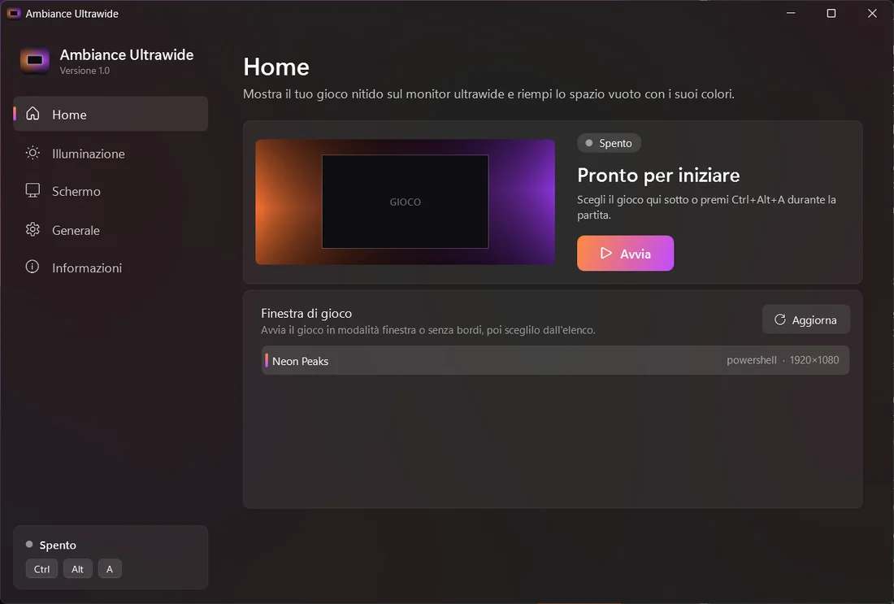
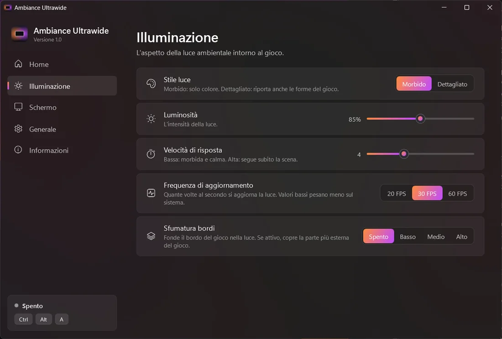

Ambiance Ultrawide
Luce ambientale sincronizzata con il tuo gioco.
Luce ambientale sincronizzata con il tuo gioco, per monitor ultrawide. Riempie le bande nere intorno al gioco con un bagliore morbido, come l'illuminazione ambientale di un televisore. Il gioco resta nitido pixel per pixel, senza perdere FPS.
Gratis · Open source · Windows 10/11 · 12 lingue

Il gioco resta nitido, lo spazio vuoto si illumina della sua luce
Addio alla bassa risoluzione sfocata
Sinistra: risoluzione di Windows ridotta. Destra: Ambiance Ultrawide.


Riempi lo schermo senza perdere FPS
Il gioco disegna gli stessi pixel, Windows li mostra più grandi

Luce morbida o dettagliata
Un bagliore di colore calmo o uno che riprende le forme del gioco

Scegli il gioco e premi Avvia
Oppure premi Ctrl+Alt+A durante la partita

Regola la luce come preferisci
Stile, luminosità, velocità di risposta e frequenza

Funzionalità
Cattura tramite GPU, circa 1% di CPU. Non tocca la memoria del gioco.
- Luce ambientale sincronizzata con la scena del gioco
- Immagine nitida, senza la sfocatura della bassa risoluzione
- Rimuove i bordi, ridimensiona e centra il gioco
- Riempie lo schermo senza perdere FPS
- Cattura tramite GPU, circa 1% di CPU
- Stili di luce Morbido e Dettagliato
- Impostazioni di luminosità, risposta e frequenza
- Non tocca la memoria del gioco, nessuna raccolta di dati
Informazioni
Trasforma le bande nere del tuo monitor ultrawide in luce ambientale sincronizzata con il gioco.
Quando giochi a un gioco 16:9 su un monitor 21:9 o 32:9, i lati restano neri. Ambiance Ultrawide li riempie con un bagliore morbido che cambia in sincronia con la scena del gioco, proprio come l'illuminazione ambientale dei televisori moderni. Esplosioni, tramonti e luci al neon si espandono oltre i bordi del gioco, e tutto lo schermo ne diventa parte.
Due stili di luce: Morbido (un bagliore di colore tranquillo) e Dettagliato (segue le forme del gioco). Luminosità, velocità di risposta e frequenza di aggiornamento sono regolabili.
Nitido, non sfocato: abbassare la risoluzione di Windows rende tutto sfocato. Ambiance Ultrawide mostra invece il gioco in una finestra senza bordi, pixel per pixel e centrata. Se lo vuoi più grande, può ingrandirlo fino a riempire lo schermo con la lente di ingrandimento di Windows, senza perdere FPS.
Leggero per il sistema: cattura lo schermo tramite la scheda video, circa 1% di CPU. Non tocca mai la memoria né i file dei tuoi giochi: legge solo ciò che appare sullo schermo. Non raccoglie dati e non si connette a Internet.
Come si usa: avvia il gioco in modalità finestra o senza bordi, sceglilo in Ambiance Ultrawide e premi Avvia. Oppure premi Ctrl+Alt+A durante la partita. Ctrl+Alt+Z attiva o disattiva l'ingrandimento.
Gratuito e open source. Interfaccia in 12 lingue.